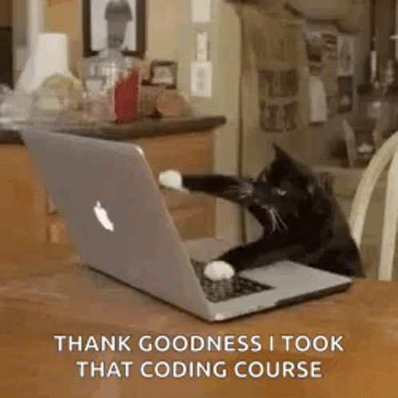

GIF
This is an GIF of a cat typing on a computer!
The GIF format allows for some sort of animation without the need of a video format!
I chose this image because it reminds me of this course to an extent. I've worked with a small amount of HTML in the past and I feel like thats why I know what I'm doign sometimes! It really helped out.
Source: GIF